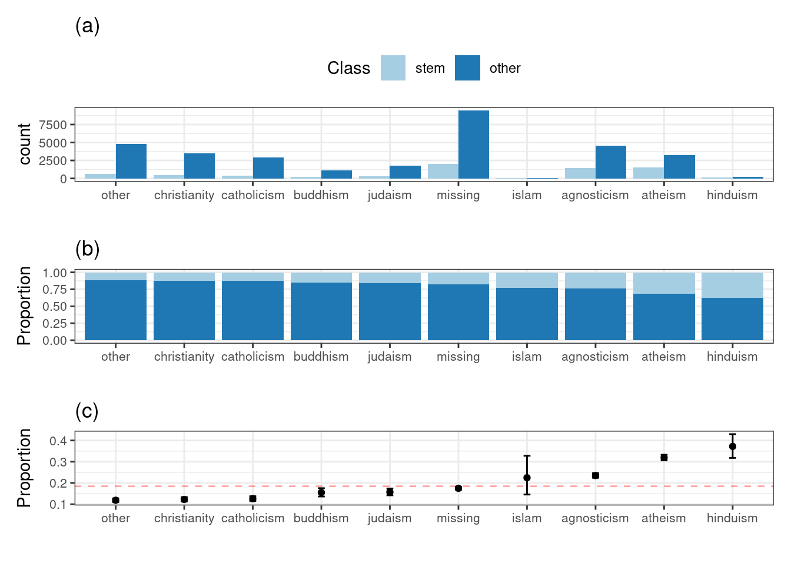

4.6 Visualizations for Categorical Data: Exploring the OKCupid dataset
OkCupid is an online dating site that serves international users. Kim and Escobedo-Land (2015) describe a data set where over 50,000 profiles from the San Francisco area.
load(url("https://github.com/topepo/FES/blob/master/Data_Sets/OkCupid/okc.RData?raw=true"))First look at the dataset
# bind 'okc_test'
okc <- okc_train %>%
bind_rows(okc_test)Skim okc
skimr::skim(okc) %>%
knitr::kable()| skim_type | skim_variable | n_missing | complete_rate | factor.ordered | factor.n_unique | factor.top_counts | numeric.mean | numeric.sd | numeric.p0 | numeric.p25 | numeric.p50 | numeric.p75 | numeric.p100 | numeric.hist |
|---|---|---|---|---|---|---|---|---|---|---|---|---|---|---|
| factor | diet | 0 | 1 | FALSE | 19 | die: 19691, mos: 15229, any: 5440, str: 4583 | NA | NA | NA | NA | NA | NA | NA | NA |
| factor | drinks | 0 | 1 | FALSE | 7 | soc: 36756, rar: 5328, oft: 4531, not: 2868 | NA | NA | NA | NA | NA | NA | NA | NA |
| factor | drugs | 0 | 1 | FALSE | 4 | nev: 32805, dru: 11758, som: 6818, oft: 366 | NA | NA | NA | NA | NA | NA | NA | NA |
| factor | education | 0 | 1 | FALSE | 33 | gra: 21423, gra: 8151, wor: 5193, ed_: 3572 | NA | NA | NA | NA | NA | NA | NA | NA |
| factor | income | 0 | 1 | FALSE | 13 | mis: 40584, inc: 2876, inc: 1572, inc: 1080 | NA | NA | NA | NA | NA | NA | NA | NA |
| factor | offspring | 0 | 1 | FALSE | 16 | kid: 29360, doe: 6744, doe: 3653, doe: 3322 | NA | NA | NA | NA | NA | NA | NA | NA |
| factor | pets | 0 | 1 | FALSE | 16 | pet: 15181, lik: 13642, lik: 6534, lik: 3988 | NA | NA | NA | NA | NA | NA | NA | NA |
| factor | religion | 0 | 1 | FALSE | 10 | rel: 15333, agn: 8043, oth: 7231, ath: 6316 | NA | NA | NA | NA | NA | NA | NA | NA |
| factor | sign | 0 | 1 | FALSE | 13 | sig: 7818, leo: 3922, gem: 3911, can: 3784 | NA | NA | NA | NA | NA | NA | NA | NA |
| factor | smokes | 0 | 1 | FALSE | 6 | no: 38941, smo: 3619, som: 3268, whe: 2688 | NA | NA | NA | NA | NA | NA | NA | NA |
| factor | status | 0 | 1 | FALSE | 5 | sin: 48032, see: 1814, ava: 1624, mar: 269 | NA | NA | NA | NA | NA | NA | NA | NA |
| factor | where_state | 0 | 1 | FALSE | 36 | cal: 51672, new: 15, ill: 6, mas: 4 | NA | NA | NA | NA | NA | NA | NA | NA |
| factor | where_town | 0 | 1 | FALSE | 51 | san: 26683, oak: 6214, ber: 3616, san: 1168 | NA | NA | NA | NA | NA | NA | NA | NA |
| factor | religion_modifer | 0 | 1 | FALSE | 5 | rel: 25718, but: 11469, and: 8309, and: 4221 | NA | NA | NA | NA | NA | NA | NA | NA |
| factor | sign_modifer | 0 | 1 | FALSE | 4 | sig: 17909, and: 17709, but: 15511, and: 618 | NA | NA | NA | NA | NA | NA | NA | NA |
| factor | Class | 0 | 1 | FALSE | 2 | oth: 42190, ste: 9557 | NA | NA | NA | NA | NA | NA | NA | NA |
| numeric | age | 0 | 1 | NA | NA | NA | 3.255509e+01 | 9.518919e+00 | 18 | 26.000000 | 30.000000 | 37.000000 | 109.000000 | ▇▂▁▁▁ |
| numeric | height | 0 | 1 | NA | NA | NA | 6.833121e+01 | 3.979818e+00 | 1 | 66.000000 | 68.000000 | 71.000000 | 95.000000 | ▁▁▁▇▁ |
| numeric | last_online | 0 | 1 | NA | NA | NA | 3.916536e+01 | 7.625808e+01 | 0 | 1.000000 | 4.000000 | 30.000000 | 370.000000 | ▇▁▁▁▁ |
| numeric | cpp | 0 | 1 | NA | NA | NA | 2.898700e-03 | 5.376220e-02 | 0 | 0.000000 | 0.000000 | 0.000000 | 1.000000 | ▇▁▁▁▁ |
| numeric | cpp_fluently | 0 | 1 | NA | NA | NA | 1.252250e-02 | 1.112020e-01 | 0 | 0.000000 | 0.000000 | 0.000000 | 1.000000 | ▇▁▁▁▁ |
| numeric | cpp_okay | 0 | 1 | NA | NA | NA | 9.855600e-03 | 9.878610e-02 | 0 | 0.000000 | 0.000000 | 0.000000 | 1.000000 | ▇▁▁▁▁ |
| numeric | cpp_poorly | 0 | 1 | NA | NA | NA | 7.382100e-03 | 8.560210e-02 | 0 | 0.000000 | 0.000000 | 0.000000 | 1.000000 | ▇▁▁▁▁ |
| numeric | lisp | 0 | 1 | NA | NA | NA | 5.991000e-04 | 2.446880e-02 | 0 | 0.000000 | 0.000000 | 0.000000 | 1.000000 | ▇▁▁▁▁ |
| numeric | lisp_fluently | 0 | 1 | NA | NA | NA | 1.488000e-03 | 3.854640e-02 | 0 | 0.000000 | 0.000000 | 0.000000 | 1.000000 | ▇▁▁▁▁ |
| numeric | lisp_okay | 0 | 1 | NA | NA | NA | 2.319000e-03 | 4.810030e-02 | 0 | 0.000000 | 0.000000 | 0.000000 | 1.000000 | ▇▁▁▁▁ |
| numeric | lisp_poorly | 0 | 1 | NA | NA | NA | 2.280300e-03 | 4.769870e-02 | 0 | 0.000000 | 0.000000 | 0.000000 | 1.000000 | ▇▁▁▁▁ |
| numeric | asian | 0 | 1 | NA | NA | NA | 1.371094e-01 | 3.439661e-01 | 0 | 0.000000 | 0.000000 | 0.000000 | 1.000000 | ▇▁▁▁▁ |
| numeric | black | 0 | 1 | NA | NA | NA | 5.637040e-02 | 2.306379e-01 | 0 | 0.000000 | 0.000000 | 0.000000 | 1.000000 | ▇▁▁▁▁ |
| numeric | hispanic_latin | 0 | 1 | NA | NA | NA | 8.937720e-02 | 2.852901e-01 | 0 | 0.000000 | 0.000000 | 0.000000 | 1.000000 | ▇▁▁▁▁ |
| numeric | indian | 0 | 1 | NA | NA | NA | 2.467780e-02 | 1.551426e-01 | 0 | 0.000000 | 0.000000 | 0.000000 | 1.000000 | ▇▁▁▁▁ |
| numeric | middle_eastern | 0 | 1 | NA | NA | NA | 1.571110e-02 | 1.243564e-01 | 0 | 0.000000 | 0.000000 | 0.000000 | 1.000000 | ▇▁▁▁▁ |
| numeric | native_american | 0 | 1 | NA | NA | NA | 2.125730e-02 | 1.442422e-01 | 0 | 0.000000 | 0.000000 | 0.000000 | 1.000000 | ▇▁▁▁▁ |
| numeric | other | 0 | 1 | NA | NA | NA | 6.083440e-02 | 2.390287e-01 | 0 | 0.000000 | 0.000000 | 0.000000 | 1.000000 | ▇▁▁▁▁ |
| numeric | pacific_islander | 0 | 1 | NA | NA | NA | 2.475510e-02 | 1.553793e-01 | 0 | 0.000000 | 0.000000 | 0.000000 | 1.000000 | ▇▁▁▁▁ |
| numeric | white | 0 | 1 | NA | NA | NA | 6.474578e-01 | 4.777663e-01 | 0 | 0.000000 | 1.000000 | 1.000000 | 1.000000 | ▅▁▁▁▇ |
| numeric | essay_length | 0 | 1 | NA | NA | NA | 3.132866e+00 | 6.777757e-01 | 0 | 3.009026 | 3.269513 | 3.480438 | 4.983486 | ▁▁▂▇▁ |
| numeric | profile | 0 | 1 | NA | NA | NA | 2.587400e+04 | 1.493822e+04 | 1 | 12937.500000 | 25874.000000 | 38810.500000 | 51747.000000 | ▇▇▇▇▇ |
Plot Class
okc %>%
ggplot(aes(Class, fill = Class)) +
geom_bar() +
theme(legend.position = 'none')4.6.1 Visualizing Relationships between Outcomes and Predictors
4.6.1.1 Outcome and Categorical Predictor
Let’s plot the frequency of the stated religion, partitioned and color by the outcome (Class).
binom_stats <- function(x, ...) {
x <- x$Class[!is.na(x$Class)]
res <- prop.test(x = sum(x == "stem"), n = length(x), ...)
data.frame(Proportion = unname(res$estimate),
Lower = res$conf.int[1],
Upper = res$conf.int[2])
}
stem_rate <- mean(okc_train$Class == "stem")
religion_rates <-
okc_train %>%
group_by(religion) %>%
do(binom_stats(.)) %>%
arrange(Proportion) %>%
ungroup() %>%
mutate(religion = gsub("religion_", "", religion),
religion = reorder(factor(religion), Proportion))
okc_train <-
okc_train %>%
mutate(
religion2 = gsub("religion_", "", as.character(religion)),
religion2 = factor(religion2, levels = as.character(religion_rates$religion))
)
bars <-
ggplot(okc_train, aes(x = religion2, fill = Class)) +
geom_bar(position = position_dodge()) + scale_fill_brewer(palette = "Paired") +
xlab("") +
theme(legend.position = "top", axis.text = element_text(size = 8)) +
ggtitle("(a)")
stacked_vars <-
ggplot(okc_train, aes(x = religion2, fill = Class)) + geom_bar(position = "fill") +
scale_fill_brewer(palette = "Paired") +
xlab("") + ylab("Proportion") +
theme(legend.position = "none", axis.text = element_text(size = 8)) +
ggtitle("(b)")
ci_plots <-
ggplot(religion_rates, aes(x = religion, y = Proportion)) +
geom_hline(yintercept = stem_rate, col = "red", alpha = .35, lty = 2) +
geom_point() +
geom_errorbar(aes(ymin = Lower, ymax = Upper), width = .1) +
theme(axis.text = element_text(size = 8)) +
xlab("") +
ggtitle("(c)")
bars / stacked_vars / ci_plots
Does religion appear to be related to the outcome? Since there is a gradation of rates of STEM professions between the groups, it would appear so.
4.6.1.2 Outcome and Numerical Predictor
Now, let’s visualize the relationship between a categorical outcome (Class) and a numerical predictor (essay_length).
l10_breaks <- scales::trans_breaks("log10", function(x) 10^x)
l10_labels <- scales::trans_format("log10", scales::math_format(10^.x))
gam_dat <-
okc_train %>%
dplyr::select(essay_length, Class) %>%
arrange(essay_length)
gam_small <-
gam_dat %>%
distinct(essay_length)
gam_mod <- mgcv::gam(Class ~ s(essay_length), data = gam_dat, family = binomial())
gam_small <- gam_small %>%
mutate(
link = -predict(gam_mod, gam_small, type = "link"),
se = predict(gam_mod, gam_small, type = "link", se.fit = TRUE)$se.fit,
upper = link + qnorm(.975) * se,
lower = link - qnorm(.975) * se,
lower = binomial()$linkinv(lower),
upper = binomial()$linkinv(upper),
probability = binomial()$linkinv(link)
)
brks <- l10_breaks(exp(okc_train$essay_length))
essay_hist <-
ggplot(okc_train, aes(x = exp(essay_length))) +
geom_histogram(binwidth = .1, col = "#FEB24C", fill = "#FED976") +
facet_wrap(~ Class, ncol = 1) +
scale_x_log10(breaks = brks, labels = l10_labels) +
xlab("Essay Character Length") +
theme_bw() +
theme(plot.margin = unit(c(0,1,0,1.2), "cm")) +
ggtitle("(a)")
essay_gam <-
ggplot(gam_small, aes(x = exp(essay_length))) +
geom_line(aes(y = probability)) +
geom_ribbon(aes(ymin = lower, ymax = upper), fill = "grey", alpha = .5) +
geom_hline(yintercept = stem_rate, col = "red", alpha = .35, lty = 2) +
scale_x_log10(breaks = brks, labels = l10_labels) +
theme_bw() +
xlab("") +
theme(plot.margin = unit(c(0,1,0,1.2), "cm"))+
ggtitle("(b)")
essay_hist / essay_gamThe black line represents the class probability of the logistic regression model and the bands denote 95% confidence intervals around the fit. The horizontal red line indicates the baseline probability of STEM profiles from the training set.
This predictor might be worth including in a model but is unlikely to show a strong effect on its own.
4.6.2 Exploring Relationships Between Categorical Predictors
When considering relationships between categorical data, there are several options. Once a cross-tabulation between variables is created, mosaic plots can once again be used to understand the relationship between variables.
okc_train <-
okc_train %>%
mutate(
drugs = factor(as.character(drugs),
levels = c("drugs_missing", "never", "sometimes", "often")),
drinks = factor(as.character(drinks),
levels = c("drinks_missing", "not_at_all", "rarely",
"socially", "often", "very_often", "desperately"))
)
dd_tab <- table(okc_train$drugs, okc_train$drinks, dnn = c("Drugs", "Alcohol"))
# Formatting for slightly better printing
plot_tab <- dd_tab
dimnames(plot_tab)[[1]][1] <- "missing"
dimnames(plot_tab)[[2]] <- gsub("_", " ", dimnames(plot_tab)[[2]])
dimnames(plot_tab)[[2]][1] <- "missing"
dimnames(plot_tab)[[2]][6] <- "often\n"
dimnames(plot_tab)[[2]][6] <- "very often"
dimnames(plot_tab)[[2]][7] <- "\ndesperately"
mosaic(
t(plot_tab),
highlighting = TRUE,
highlighting_fill = rainbow_hcl,
margins = unit(c(6, 1, 1, 8), "lines"),
labeling = labeling_border(
rot_labels = c(90, 0, 0, 0),
just_labels = c("left", "right",
"center", "right"),
offset_varnames = unit(c(3, 1, 1, 4), "lines")
),
keep_aspect_ratio = FALSE
)In the cross-tabulation between alcohol and drug use, the χ2 statistic is very large (4043.8) for its degrees of freedom (18) and is associated with a very small p-value (0). This indicates that there is a strong association between these two variables.
ca_obj <- CA(dd_tab, graph = FALSE)
ca_drugs <- as.data.frame(ca_obj$row$coord)
ca_drugs$label <- gsub("_", " ", rownames(ca_drugs))
ca_drugs$Variable <- "Drugs"
ca_drinks <- as.data.frame(ca_obj$col$coord)
ca_drinks$label <- gsub("_", " ", rownames(ca_drinks))
ca_drinks$Variable <- "Alcohol"
ca_rng <- extendrange(c(ca_drinks$`Dim 1`, ca_drinks$`Dim 2`))
ca_x <- paste0("Dimension #1 (",
round(ca_obj$eig["dim 1", "percentage of variance"], 0),
"%)")
ca_y <- paste0("Dimension #2 (",
round(ca_obj$eig["dim 2", "percentage of variance"], 0),
"%)")
ca_coord <- rbind(ca_drugs, ca_drinks)
ca_plot <-
ggplot(ca_coord, aes(x = `Dim 1`, y = `Dim 2`, col = Variable)) +
geom_vline(xintercept = 0) +
geom_hline(yintercept = 0) +
geom_text(aes(label = label)) +
xlim(ca_rng) + ylim(ca_rng) +
xlab(ca_x) + ylab(ca_y) +
coord_equal()
ca_plot## Warning: Removed 1 rows containing missing values (geom_text).The correspondence analysis principal coordinates for the drug and alcohol data in the OkCupid data.